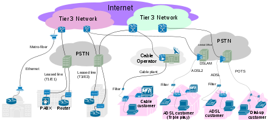

网络是如何工作的
我一直想弄清楚互联网上两台计算机是如何通信的。经过一番探索和学习，我得出了自己的答案。
古人云：“天下大事必作于细，天下难事必作于易。”从简单到复杂来理解互联网可能是个不错的主意，所以我们不妨从两台机器相互通信开始，然后慢慢演变到整个互联网通信。假设由你来解决两台机器之间的通信你会怎么做呢？
你可能会求助于你已有的知识，这是个很好的办法。要知道用已有的知识去解释未知的世界，是我们认识世界重要的方法。那我们对通信都知道了些什么呢？你可能会说我对它一无所知，其实不是的，原因可能是这里用了通信这个专业名词。让我们换个说话吧，通信是什么？通信的本质是互通信息，也就是交换信息。怎么样，现在是不是觉得熟悉些了。对的，我们可是经常交换信息的，我们经常和他人交谈，这就是在交换信息啊；还有现在你正在看这篇文章，这也是在交换信息；所以通信是一直伴随着我们的，是一个古老的话题。
让我们来审视下我们是怎么交换信息的，这可以让我们找到通信的要素。首先交谈的双方要使用相互理解的语言。我们可能都有过这样的经历，大学宿舍的室友正在用方言和爸妈打电话，你在一旁可能是一头懵逼，因为你听不懂这种方言，而你的室友却能流畅沟通；再或者某一天你在城市的街头行走，这时候一位外国友人向你走来，她操一口流利的英语，你的心中一万头草尼玛奔腾而过，为没有学好英语而懊悔不已，又错失了一个结交蓝发碧眼外国美女的机会，这一切的根源就在于当初没有学好英语。
其次是信息要有传输的通道，也就是传输介质。我们很小的时候就在课本上学到过航天员在宇宙空间中是不能像我们在地球上这样直接交谈的，而要使用无线电。原因就在于宇宙空间是近乎真空，所以表达声音的振动没法传播。所以传输介质也是通信的要素。
好了，现在通信的要素有了，我们可以着手来解决两台机器间的通信问题了。首先自然是要让两台机器使用相互理解的语言。机器在这点上比较有优势，它们都是基于二进制设计的，所以我们只需用二进制来编码我们的信息，然后模拟人类对话进行信息交换，就能解决使用相互理解的语言的问题。人类对话的过程类比到通信中称为协议，它定义了信息的格式、交换的顺序以及收到信息后应该采取的动作或者发送的回执。
那么机器可以使用哪些传输通道呢？看下你身边的电子设备，它们是怎么访问网络？手机使用无线访问；笔记本电脑既可以使用有线又可以使用无线；台式电脑通常是使用有线。这下我们可以知道机器可以使用有线和无线来进行通信。
两台机器使用有线通信是怎么做的呢？我们可以看到台式电脑有一根网线插到主机的网卡上，收发信息的过程大致是这样的：发送方的信息最终会用二进制编码表示，网卡会根据这串二进制序列改变网线的电压；接收方的网卡检测到网线电压的变化得到了这串二进制序列，这样就完成了信息的发送。这里只是粗略的描述，重在描述思想。
类似地无线通信则需要无线网卡，这时候就不需要网线了，因为它是用电磁波传输的。发送信息的过程和有线类似：发送方信息的二进制序列经由无线网卡加载到电磁波上，接收方的无线网卡在同一频率监听，收到同频率的电磁波会谐波振荡，这样就可以电磁波上的二进制序列取下来。
现在我们可以说服自己，两台机器之间可以相互通信了。那么接下来我们需要将有通信需求的机器组建成网络。如果我们顺着上述思路继续往下思考，最自然的方式让机器有 N 个网卡，然后通信的双方用网线直连起来。但这样做的缺点非常明显，首先是机器应该有多少个网卡呢？可能是个非常大的数，例如 232。其次是机器要拥有这么多网卡得多大啊，还有就是这机器也会非常昂贵，这样说起来电脑就不会普及到千家万户。作为事后诸葛亮，我们知道机器网卡的数量很有限，所以这个问题应该如何解决呢？
既然机器的网卡数量有限，那么我们可不可把这些网卡从终端电脑上移动到一个中间设备上呢，这可能也有点问题，不过可以进一步将这些网卡分散到这些中间设备构成的网络上，这样子我们的问题得到了解决。我们将需要通信的机器组成了网络，那么怎么在网络中为通信的两台机器确定好一条通信通道呢？就像两台机器直连那样，只不过现在是由多段网线和多个网卡构成。如果能确定好通信通道，之后网络上两台机器通信的问题就降维到类似两台机器直接时的通信了，这成了解决问题的一个思考方向。
关于如何在网络上为两台机器确定好一条通信通道，这在网络发展的历史上是一个很有争议的问题，也是一个很有意思的问题。在计算机网络形成之前，要知道我们其实已经有了电话网络。那么自然会想能不能使用已有的电话网络工作的方式呢，说实话这样还挺有吸引力，因为电话网络已经被证实是能工作的了，而且还工作得不错。那我们来看下电话网络是怎么工作的。
电话网络的核心思想是电路交换(Circual Switch)，通俗简单地理解就是像两台机器直连那样，中间带网卡的机器切换自己的开关，然后形成了一条通道，这条通道专用于这次通信。使用这种专用通道通信的实时性很高，也能保证通信的速率，所以我们可以使用它来打电话。但是它也有缺点，那就是效率很低，因为这条通道是专用的。类比到现实生活中，就好像你开一辆车经过一段高速时，别人就不允许在这段高速上开车。
电路交换的方式有它自身的缺点，于是就出现类似现实交通的方案，称之为包交换(Packet Switch)。想像下你出去旅游的经历，你可能先坐公交到地铁站，然后坐地铁到机场，之后坐飞机到了目的城市的机场，再从机场坐的士到入住的酒店，安顿好就可以开始愉快的假期了。这时候你就相当于要传输的信息，交通网络最终将你送达了目的地，但并不没胡建立专用的通道，每段交通路径都专注完成自己的事情，最终圆满完成任务。包交换网络的工作方式也是类似这样的，信息封装到数据包中，就像出行的旅客，网络上的路径相当于旅途。
包交换网络解决了电路交换网络低效的问题，但它实时性弱，不能保证最低通信速率。于是选择哪种方式就成了一个争议的问题。由于在大多数情况下，包交换网络的延时和电路交换网络差不多，而它的效率又高，所以计算机先辈们决定使用包交换网络，而不是使用现有的电路交换方式。
于是我们根据包交换网络的思想来组网。如果让你来组网你会怎么做？我们还是可以求助于已有的知识，我们有了一个现在的包交换网络–全球交通网。全球的交通网络是由各个国家的交通网络相互连接构成的，类似的全球计算机网络也是由各个国家的计算机网络构成的。当然你可能会问：“为什么不是一个大的网络连接所有的机器，而是多个网络互联构成互联网。”原因大概有三点：1，行政管理；2，缩放；3，性能。
各个国家可能对自己国家的网络有不同的管理需求，例如使用什么路由协议；另外就是缩放更加灵活；还有就是性能，当网络中带网卡的机器，也就是路由器的数量越来越多，为通信的双方确定一条路径会很有挑战，将网络规模能有效提高网络的性能。
构成全球计算机网络–互联网的网络，计算机网络的术语称它为自治网络。一个国家可能有多个自治网络，自治网络通过 NAP， MAE 相互联接起来，规定是自治网络至少要连接3个 NAP。
自治网络则主要由有通信的需求的机器和路由器构成的，它们都可以称为网络的结点，只是结点的能力大小和分工不同，都包含完成通信必须的软硬件。由于通信还是比较复杂，自然会想办法来降低难度，于是人们采用了分层架构来设计完成通信的软件。通常可以将它分为四层：1，应用层；2，传输层；3，网络层；4，链路层；
前面我们提到，网络上的两台机器是通过有线或无线连接到路由器，路由器之间用网线连接起来，这样最终完成连接的。有线或无线介质就对应链路层，它要解决最基础的链路通信问题，也就是怎么把信息发送到介质中，并从介质中取出数据。
链路层解决了最基础的网络结点间的数据收发问题，网络层则是解决网络边界上的两台主机的数据收发问题，这两台主机可能是经由多个结点连接起来的，所以网络层定义了 Internet Protocol(IP)，网络上每个结点都拥有唯一的 IP 地址，为也防止 IP 冲突，有专门的国际组织来负责 IP 地址的分配。IP 地址有点类似于我们的居住地址，我们可以用它来收发快递，同样的，我们可以使用 IP 地址来收发数据包。
现实生活中，我们经常会和其他人交谈，交谈的双方得选择一门两个人都懂的语言，如果一个人说英语，另一个人不懂英语，那么对话就没办法继续下去；如果两人置身于真空中（暂不考虑其他情况），直接对话也不可能，没有了传输的介质。类比于人类的交谈，我们可以简单的推断计算机之间要实现通信需要一些充分条件：1.两台计算机；2.使用共同理解的语言；3.有介质传输信息。
找两台计算机比较好办，让计算机使用共同的语言就棘手些。计算机本身只能处理二进制数，如果想要表达我们想说的一句话，很自然需要很多位二进制来表示，这个之间的映射关系是字符编码，如今通用的是 Unicode 编码。我们说话是一句一句的说，计算机之间通信也差不多，只不过我们把它称为包。那一个包就是包含一句话啰！计算机在这方面并不比人类，一个包有时可以包含一句话，有时可能不行，它是固定长度的。计算机前辈规定一个包的最长长度是1500个字节。它们之前的传输介质有很多，可以分为两大类：有线；无线。虽然形式各样，但它们的主要任务就是充当传输介质，让一台计算机可以把0，1发到另一台计算机。而这个发送0，1的装置我们称为网卡。
现在两台计算机可以收发数据了，但离我们的目标还有一段距离，我们想要的是任意两台计算机之间的通信。每张网卡都有一个唯一标识，我们称为 MAC(Media Access Control)，由于 MAC 地址是设计用来在机器之间的收发数据的，所以用它来进行网络间的通信并不合适。于是我们引入了 IP(Internet Protocol) 地址，它能唯一标识网络上的一台计算机。组建网络的时候我们需要把所有的计算机都连接起来，为了完成这个目标，我们引入了路由器(Router)。它的工作原理大致是这样的：它内部存有一张路由表，收到数据包之后，取出 IP 地址查看，然后决定转发给相应的路由器或者连接的机器。
人们就是这样组建出了庞大的互联网，它的结构可以用下图来示意：


互联网的组网方式并不是一台计算机直接连接路由器，然后这个路由器通过若干个路由器和另外一台计算机相连。实际上由于联网的计算机非常之多，网络发展成了层级关系，最上层是称为 Tier 1 network， 下面还有 Tier 2 network 和 Tier 3 network。ISP(Internet Service Provider) 通常就是接入的 Tier 3 network 或 Tier 2 network，终端的用户则是通过 ISP 接入网络。
Reference:
1.How Does the Internet Work?
2.History of the Internet
3.Tier 1 network
4.Tier 2 network
5.Autonomous system)
6.Internet service provider
7.Who provides the Internet service to Internet Service Providers (ISPs)?
8.Internet Routing and Traffic Engineering